BG¶
Let’s Encrypt 2019：带来更多振奋人心的新功能 - 开源中国
被成功安利…
goal¶
因各种网站发布的年代, 使用技术各不相同, 但是好在都能依托 *-pages 服务快速发布:
- github/gitlab 为核心
- 免费 SSL 认证为基础
- 最好能一次配置长期可用
logging¶
整体上, 无论在哪个 *-pages 平台, 要折腾的事儿相似, 就3步:
- 追加配置含
SSL解析能力的 DNS 服务主机A地址- 并解决引发的有关
CANEM冲突问题
- 并解决引发的有关
- 在
*-pages平台配置Enforce HTTPS有关嗯哼 - 优雅的等待一切生效 ;-)
- 并解决可能的资源冲突问题
gh-pages¶
原先的:
༄ dig blog.zoomquiet.io +nostats +nocomments +nocmd
; <<>> DiG 9.8.3-P1 <<>> blog.zoomquiet.io +nostats +nocomments +nocmd
;; global options: +cmd
;blog.zoomquiet.io. IN A
blog.zoomquiet.io. 600 IN CNAME zoomquiet.github.io.
zoomquiet.github.io. 3251 IN A 185.199.108.153
zoomquiet.github.io. 3251 IN A 185.199.109.153
zoomquiet.github.io. 3251 IN A 185.199.110.153
zoomquiet.github.io. 3251 IN A 185.199.111.153
- 暂停原先
CNAME->ZoomQuiet.github.io. - 追加新
A记录->185.199.111.153 - 立即…
༄ dig blog.zoomquiet.io +nostats +nocomments +nocmd
; <<>> DiG 9.8.3-P1 <<>> blog.zoomquiet.io +nostats +nocomments +nocmd
;; global options: +cmd
;blog.zoomquiet.io. IN A
blog.zoomquiet.io. 600 IN CNAME zoomquiet.github.io.
zoomquiet.github.io. 2989 IN A 185.199.111.153
zoomquiet.github.io. 2989 IN A 185.199.108.153
zoomquiet.github.io. 2989 IN A 185.199.109.153
zoomquiet.github.io. 2989 IN A 185.199.110.153
触发对应 gh-pages 配置处 CNAME 冲突报警
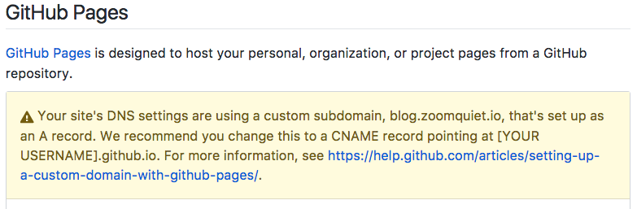
删除原先 blog.zoomquiet.io 定制域名后, gh-pages 状态恢复:
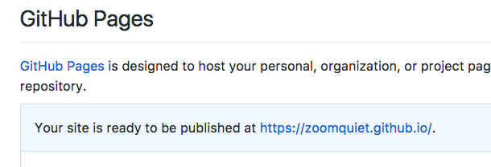
- 然而, 这肯定不是俺要的效果哪…
- 进一步的, 发现, 这是
DNSPod的问题 - namecheap 等等, 其它老厂, 是支持这种
A记录和CNAME记录指向不同的 -
所以, 回查当初域名服务商:
- 才发现, 因为抢注的早, 当年支付私人购买
.io的 iwantmyname.com - 实在太弱, 根本没有完备的域名配置服务
- 而且一直以来域名托管年费也比其它大厂贵一倍
- 说不得, 只能迁移了:
- 才发现, 因为抢注的早, 当年支付私人购买
-
先
unlock - 获得
Transfer Auth Code - 再到 namecheap 发起转移工单
- 再回 iwantmyname 同意转移
- 等待生效
- 再将 DNSPod 上对应各种配置, 逐一手工配置回 namecheap 中
- 再对应增补 SSL 依赖的 gh-pages 有关配置:
- blog 主机
A记录->185.199.111.153 - blog 主机
CNAME->ZoomQuiet.github.io.
- blog 主机
迁移前:
༄ dig zoomquiet.io +nostats +nocomments +nocmd
; <<>> DiG 9.8.3-P1 <<>> zoomquiet.io +nostats +nocomments +nocmd
;; global options: +cmd
;zoomquiet.io. IN A
zoomquiet.io. 600 IN A 172.105.199.192
zoomquiet.io. 600 IN NS f1g1ns1.dnspod.net.
zoomquiet.io. 600 IN NS f1g1ns2.dnspod.net.
...
先给銭:
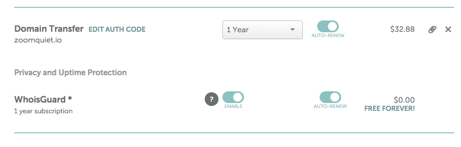
再同意…
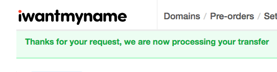
- 而且人家立即有挽救邮件来问, 为毛走哪….
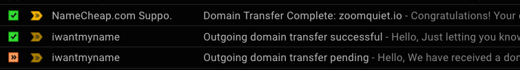
namecheap 中进行恢复
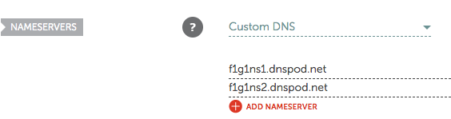
使用官方模板, 替代
DNSPod代理的…
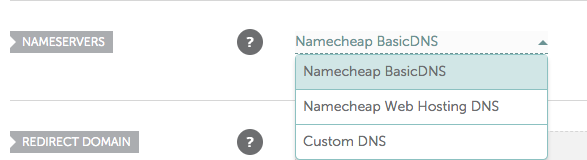
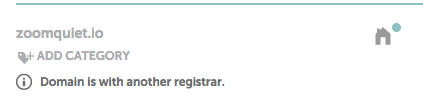
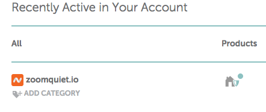
迁移并重置后:
༄ dig zoomquiet.io +nostats +nocomments +nocmd
; <<>> DiG 9.8.3-P1 <<>> zoomquiet.io +nostats +nocomments +nocmd
;; global options: +cmd
;zoomquiet.io. IN A
zoomquiet.io. 600 IN A 172.105.199.192
- 然后, 逐一先将老的 几十条配置, 逐一复制到 namecheap 解析面板中
- 然后, 按照文档要求的,配置好:
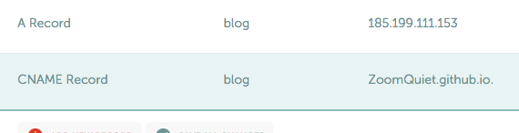
༄ dig blog.zoomquiet.io +nostats +nocomments +nocmd
; <<>> DiG 9.8.3-P1 <<>> blog.zoomquiet.io +nostats +nocomments +nocmd
;; global options: +cmd
;blog.zoomquiet.io. IN A
blog.zoomquiet.io. 1799 IN CNAME zoomquiet.github.io.
zoomquiet.github.io. 3600 IN A 185.199.111.153
zoomquiet.github.io. 3600 IN A 185.199.110.153
zoomquiet.github.io. 3600 IN A 185.199.109.153
zoomquiet.github.io. 3600 IN A 185.199.108.153
github.io. 698 IN NS ns-1622.awsdns-10.co.uk.
github.io. 698 IN NS ns-393.awsdns-49.com.
github.io. 698 IN NS ns-692.awsdns-22.net.
...
可以看到, 壕 github 全部用 AWS 域名服务来解析的…
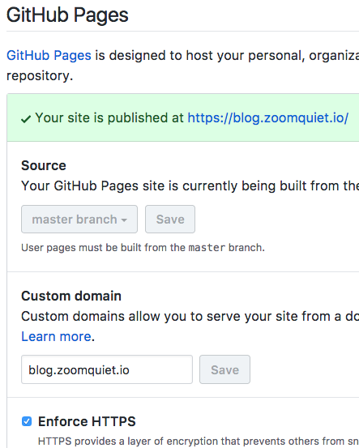
此时 gi-pages 配置已经感知到一切良好
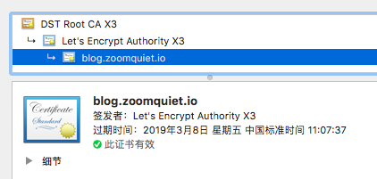
点击 chrom 域名前的小图标, 可以看到 SSL 已生效
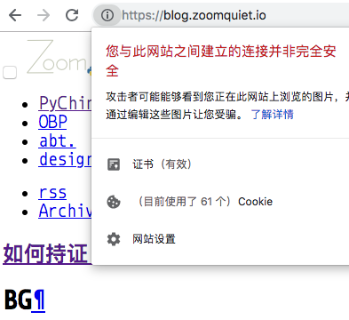
当然, 原先模板中一系列资源指向老 http 资源都无法使用了
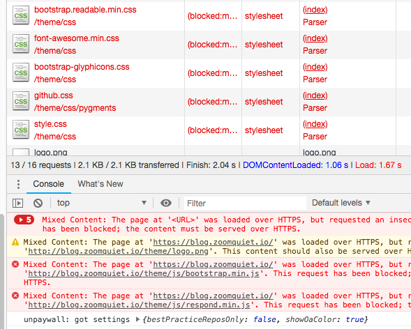
修订配置文件 pelicanconf.py:
SITEURL = 'http://blog.zoomquiet.io'
-->
'https://blog.zoomquiet.io'
但是, 进行 push 失败:
༄ git pu
To github.com:ZoomQuiet/ZoomQuiet.github.io.git
! [rejected] master -> master (fetch first)
error: failed to push some refs to 'git@github.com:ZoomQuiet/ZoomQuiet.github.io.git'
hint: Updates were rejected because the remote contains work that you do
hint: not have locally. This is usually caused by another repository pushing
hint: to the same ref. You may want to first integrate the remote changes
hint: (e.g., 'git pull ...') before pushing again.
hint: See the 'Note about fast-forwards' in 'git push --help' for details.
因为仓库目录中
CNAME文件自动构建过,和本地没同步上
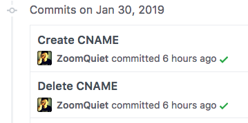
再重新编译->push->等待 gh-pages 完成发布
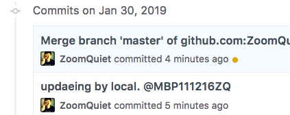
那个褐色小点, 变成绿色对勾, 就说明一切安好…
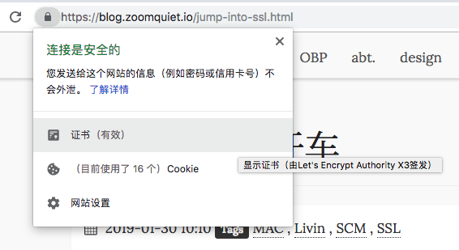
gl-pages¶
其实, gitlab 上网站先持证上岗的…
先出示一下成果:
༄ dig 101.camp +nostats +nocomments +nocmd
; <<>> DiG 9.8.3-P1 <<>> 101.camp +nostats +nocomments +nocmd
;; global options: +cmd
;101.camp. IN A
101.camp. 1799 IN CNAME pythonicamp.gitlab.io.
pythonicamp.gitlab.io. 300 IN A 35.185.44.232
gitlab.io. 48445 IN NS ns-1116.awsdns-11.org.
gitlab.io. 48445 IN NS ns-926.awsdns-51.net.
gitlab.io. 48445 IN NS ns-1697.awsdns-20.co.uk.
gitlab.io. 48445 IN NS ns-288.awsdns-36.com.
...
domain¶
首先操作就撞到神奇形象
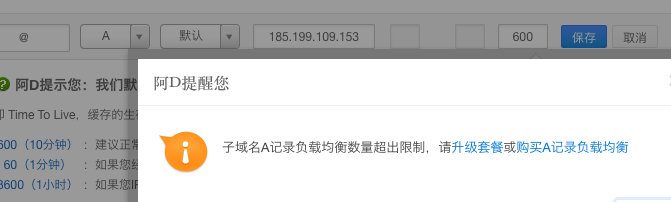
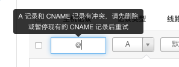
不得以, 迁移回 neamcheap 来配置, 顺畅完成:
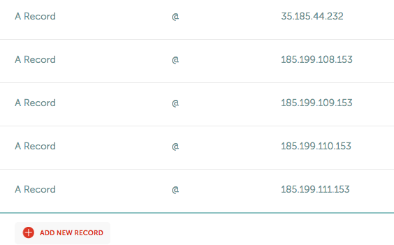
- 当然, 这波配置, 看错文档, 配置成 github 解析主机了
- 但是, 证明 DNSPod 完全不可用了…
pages¶
配置证书前, 得先生成, gitlab 不象 github 为用户自动生成, 得自行嗯哼
- 先安装 Certbot
- Let’s Encrypt 官方推出的证书生成工具
brew install certbot
然后手工给对应域名生成密匙对:
$ sudo certbot certonly -a manual -d 101.camp --email zoom.quiet@gmail.com
- 注意, 这里
-d参数可以叠加 - 不过, 毎生成一个, 必须同时完成自证检验,才能继续
- 否则, 等于放弃当前生成的密匙
即, 蔱根据提示完成:
Create a file containing just this data:
iIpSoAbePD ... 1tTDSskcHQFs
And make it available on your web server at this URL:
http://101.camp/.well-known/acme-challenge/iIpSoAbePDhDmGwPUDfER-Czl_bxduu2Cp6qE-IxjLI
- - - - - - - - - - - - - - - - - - - - - - - - - - - - -
Press Enter to Continue
此时, 千万别按回车:
- 得回到仓库中
- 构建
.well-known/acme-challenge/iIpSoAbePDhDmGwPUDfER-Czl_bxduu2Cp6qE-IxjLI目录 - 并在其中构建
index.html文件 - 文件内容就那一行提供的用来检验的数据
- 当然, 对于 gl-pages 网站
- 只是手工建立目录和文件, 复制进入数据
- 再
git push就好 - 只是, 按回车前, 一定要先
- 访问那个 URI
- 看一眼, 是否可以获得对应数据
按下回车
Waiting for verification...
Cleaning up challenges
IMPORTANT NOTES:
- Congratulations! Your certificate and chain have been saved at:
/etc/letsencrypt/live/101.camp/fullchain.pem
Your key file has been saved at:
/etc/letsencrypt/live/101.camp/privkey.pem
Your cert will expire on 2019-04-23. To obtain a new or tweaked
version of this certificate in the future, simply run certbot
again. To non-interactively renew *all* of your certificates, run
"certbot renew"
- If you like Certbot, please consider supporting our work by:
Donating to ISRG / Let's Encrypt: https://letsencrypt.org/donate
Donating to EFF: https://eff.org/donate-le
嗯哼, 好了, 出现以上类似信息
- 说明, 已经在官方注册好并检验通过私人证书了
- 不过, 这种证书只有 4个月 寿命
- 到时得运行
certbot renew一下
接下来正常重新配置一下 gl-pages 中的域名
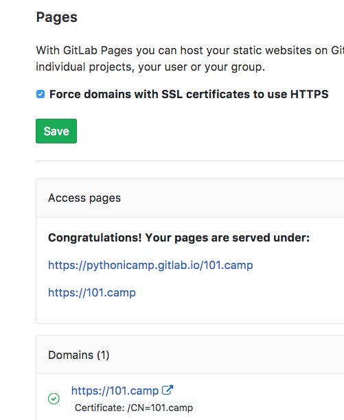
打开 HTTPS 开关
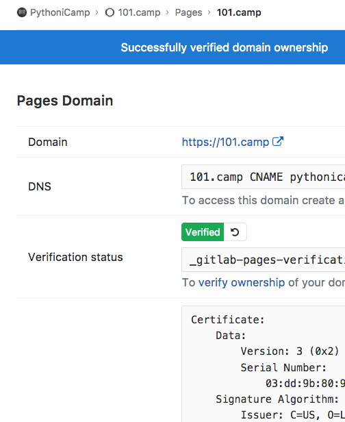
根据提示, 从本地
letsencrypt证书目录中复制出有关嗯哼就好
- 当然, 别忘记重新在域名解析商, 配置新的
TXT字串
waitting¶
首先..
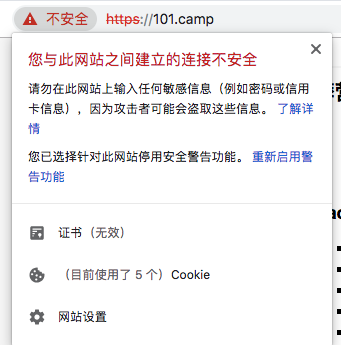
然后可以看到:
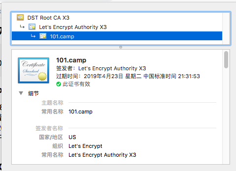
接着…
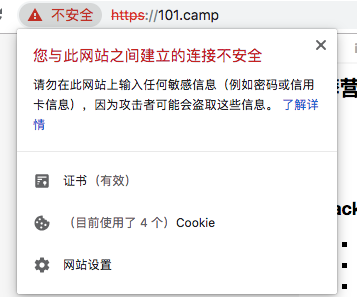
最后…
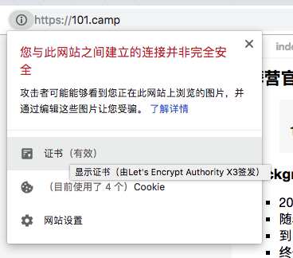
这是因为有的图片/css/js 资源, 还是用 hhtp 引用的, 得升级:
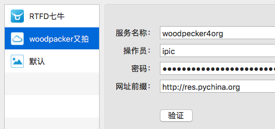
俺采购的工具, 才发现主要图床还是 http 的
追查文档:
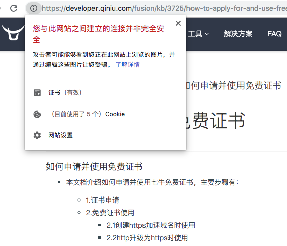
对比隔壁 …
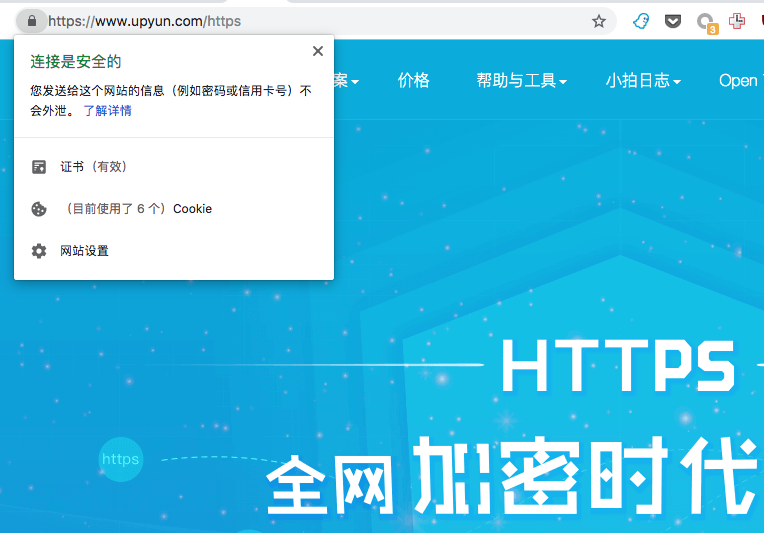
嚓, 这不很明显, 只能选择后者了…
- 当然, 又引发了欠费等等额外处置事务
- 那就是另外的故事了
- 但是, 反正可以先直接用 gl-pages 空间嘛
- 已经 HHTPS 光辉笼罩下的资源渠道…
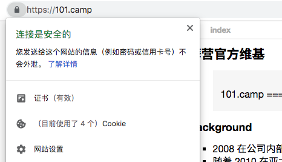
终于…收功
summary¶
- DNSPod 依然是感觉最舒服的 DNS 管理界面, 可惜彻底被放弃了, 能迁走就迁吧…
- 而且功能已经落后
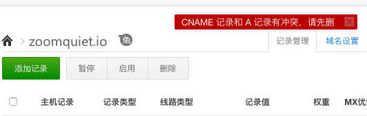
- gitlab 比 github 要 hardcore 很多
- 但是, 乐趣也更多也
- 嫑怕嫑怕嫑怕
- 官方文档, 总是最合理的
- 一定要安心静静读一遍, 比查找多少中文说明都好用
- 所以, 俺这篇, 也纯粹是私人 BDD, 包含一些隐坑, 不好意思提了
- 就渴望您也撞到
- 好一起呵呵…
refer¶
- 如何持证 (HTTPS) 开车 · Yixuan
- Lets encrypt for gitlab pages · Pages · Project · User · Help · GitLab
- How to Transfer a Domain - Domain Transfers -Namecheap
Sayeahooo¶
- 4h 资料搜索理解
- 2d gitlab 尝试/生效
- 4h github 嗯哼
- 3h 域名迁移尝试
- 2h 截屏,文档嗯哼…
Comments
comments powered by Disqus